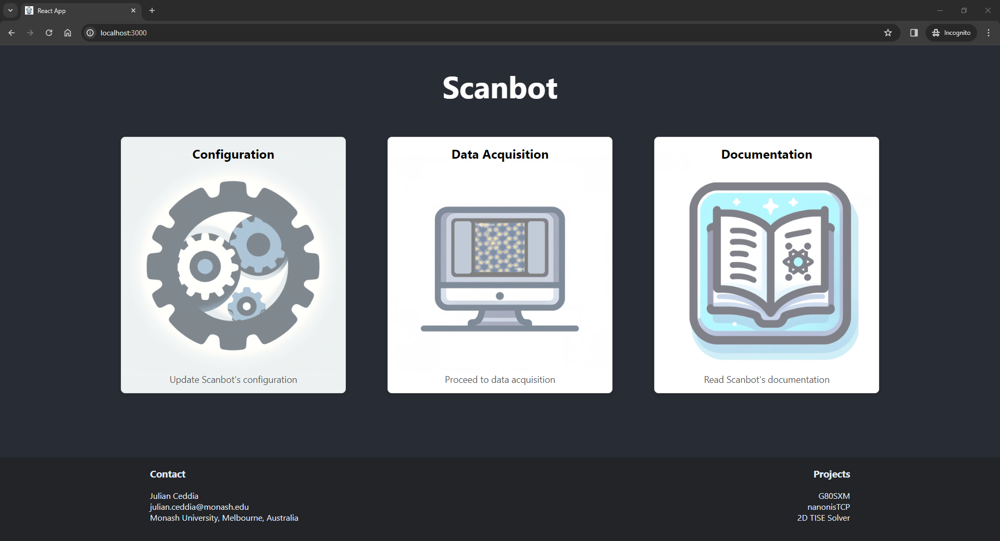
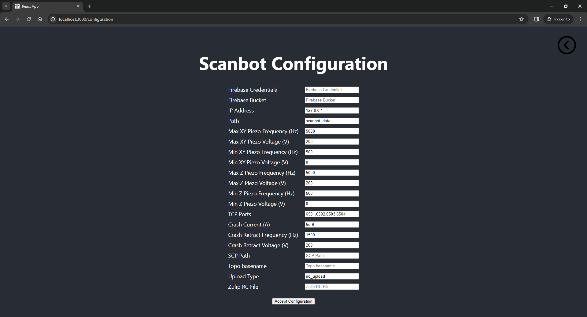
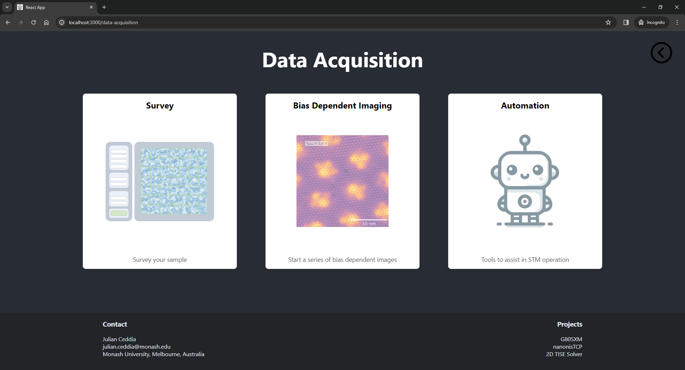
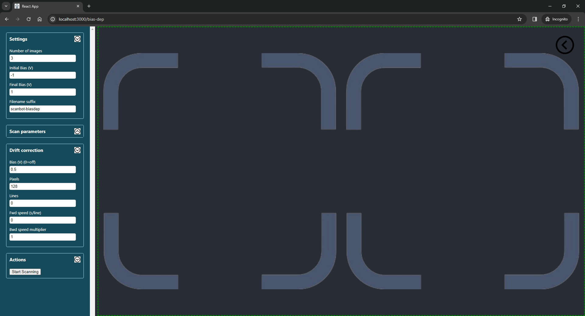

Scanbot Web App
Scanbot has been implemented as a web application using React. This application is still being developed, with the following features already fully implemented:
- Sample Surveying
- Bias Dependent Imaging
- End-To-End Survey Automation

Installation
To use the web application, you can download and run the .exe , then navigate to http://127.0.0.1:5000/. Alternatively, follow the normal installation and complete these additional steps:
- Install node.js from here or if you're using anaconda, run conda install conda-forge::nodejs
- Navigate to
~/scanbot/scanbotandrun npm install - Start the server: navigate to
~/scanbot/server/and runpython server.py - Start the web app: navigate to
~/scanbot/scanbot/and runnpm start
Configuration
From the landing page, you can access Scanbot's configuration. It is reccommended that you review the default settings before using any of the tools in Scanbot. Upon accepting the configuration, your scanbot_config.ini file will be saved automatically and your settings will be remembered. These settings can be updated any time. For a detailed description about the configurable parameters, see configuration. 
Data Acquisition
From the landing page, you can access the data acquisition tools, including tools to help automate the STM. 
Survey

When the Survey function is selected, the parameters in the table below can be configured.
Note that answering Yes to Auto tip shaping?, is only possible after following a short
initialisation procedure.
| Parameter | Description |
|---|---|
| Survey fine grid size (NxN) | Surveys are grids of images. This parameter defines the grid size. For example, if N=3, the survey grid will be 9 images in a 3x3 grid |
| Survey course grid size X/Y | The course grid is a macroscopic grid of points on the sample where surveys will be carried out. At the completion of each survey, the course piezos will move the tip to the next location in the course grid. The course grid size is XxY. For example, if X=5 and Y=2, a total of 10 fine-grid surveys will be carried out. |
| Scan size (m) | Length and widthof each image in the survey in meters |
| Scan spacing (m) | Spacing between images in a survey in meters |
| Number of pixels | Number of pixels in each image in the survey |
| Scan bias (V) | Bias the images in the survey will be acquired at |
| Filename suffix | String that will be appended to the end of the .sxm filenames for all images acquired in the survey |
| Drift compensation (s) | Number of seconds after which to restart each scan. This is to accommodate for drift induced by the scan frame moving. |
| Number of motor steps (Z+) | Number of motor steps the tip will retract before moving to the next survey location in the course grid |
| Piezo voltage during Z+ motor steps (V) | Voltage applied to the Z piezos when retracting the tip before moving to the next course grid location |
| Piezo frequency during Z+ motor steps (Hz) | Frequency applied to the Z piezos when retracting the tip before moving to the next course grid location |
| Number of motor steps (X/Y) | Number of piezo motor steps (after retracting in Z+) between course grid locations |
| Piezo voltage during X/Y motor steps (V) | Voltage applied to the X/Y piezos when moving to the next course grid location |
| Piezo Frequency during X/Y motor steps (Hz) | Frequency applied to the X/Y piezos when moving to the next course grid location |
| Call hk_survey.py after each image? | Answer 'Yes' if you've written a custom hk_hook.py hook that you want executed after each scan completes |
| Call hk_classifier.py instead of default classifier? | Answer 'Yes' if you've written a custom hk_classifier.py hook to analyse completed scans and determine if the tip needs reshaping |
| Auto tip shaping? | Answer 'Yes' if you want Scanbot to automatically move the tip to the clean reference metal and reshape the tip when it detects a bad tip |
Bias Dependent Imaging
The bias dependent imaging function lets you take a series of drift-corrected images at different bias values. The plot area will show the latest image side-by-side with a GIF of all the previously acquired images in the set. 
When the Bias Dependent function is selected, the following parameters can be configured:
| Parameter | Description |
|---|---|
| Number of images | Number of images to acquire between the initial and final bias |
| Initial bias (V) | Bias of the first image in the set |
| Final bias (V) | Bias of the final image in the set |
| Pixels in data image | Number of pixels in the bias dependent scans. This must be a multiple of 16 in nanonis |
| Lines in data image | Number of lines in the bias dependent scans |
| Time per line during data acquisition (s) | Sets the forward speed of the tip during bias dependent scans |
| Backwards time per line multiplier | Sets the backward speed of the tip during bias dependent scans. (2 = twice as fast as the forward speed) |
| Pixels in drift correction image | Number of pixels during the frames taken for drift correction purposes. A drift correction frame is acquired between each of the bias dependent scans at a constant bias |
| Lines in drift correction image | Number of lines during the frames taken for drift correction purposes. Set this to 0 to keep the same ratio as pixels/lines in the bias dependent images |
| Bias during drift correction (V) | Bias that the drift correction frames are acquired at. Set this to 0 to turn off drift correction |
| Time per line during drift correction (s) | Sets the forward speed of the tip when acquiring drift correction images |
| Backwards time per line multiplier | Sets the backward speed of the tip during drift correction scans. (0.5 = half the speed as the forward speed) |
| Suffix | Text to append to the .sxm filenames for all images in this set |
Automation
Surveys can be fully automated by first initialising the tip, sample, and clean reference metal locations from the 'Automation' screen - simply allow the browser to use of the camera and follow the prompts.
Once these locations are initialised, you will be able to answer 'Yes' to the Automated Tip Shaping? field.
Under these cirumstances, Scanbot will autonomously shape the tip once it detects a five 'bad' images in a row.
The process is described in more details here.
Alternatively, you can trigger automated tip shaping manually. This action tells Scanbot to automatically acquire a tip suitable for imaging. The process is as follows:
- An NxN grid is setup within the scannable region
- A small scan is acquired at the first location in the grid
- If the scanned region is flat/clean, it is deemed suitable for creating an imprint. If not, the scan frame is moved to the next location in the grid and the process repeats
- The tip apex creates an imprint in the middle of the scan window
- The imprint of the tip apex is imaged
- The imprint is analysed and given size score (in units of nm2) and a circularity score (from 0 to 1)
- If the target size and circularity values are not met, the scan frame moves to the next location and the process is repeated
- If the target size and circularity values are met, the process completes
| Parameter | Description |
|---|---|
| Tip shaping grid size (NxN) | The total number of tip-shaping attempts will be NxN |
| Scan size (m) | Size of the scan window when imaging the tip imprint |
| Desired symmetry (0=asymmetric, 1=perfect circle) | Circularity score that needs to be met before tip-shaping is successful. The imprint circularity is calculated by analysing its contour. 0.85 or more will generally be good enough |
| Maximum size (nm2) | Maximum area in units of nm2 of the imprint. This will vary for different metal surfaces. 2.5 is a good starting point |
| Tip depth when assessing imprint (m) | Amount to crash the tip when creating an imprint to be analysed. This will vary for different metal surfaces. -1.1e-9 is a good starting point |
| Tip depth when reshaping the tip (m) | Maximum amount to crash the tip when reshaping it. -10e-9 to -15e-9 is a good starting point if the rng is turned on |
| Randomise tip depth from 0 to above value when reshaping? | Randomising the tip crash depth from zero to a maximum value seems to work better than try the same value over and over. Generally select 'Yes' for this option |
| Drift compensation time (s) | Restarts each scan after this many seconds to compensate for drift when moving scan frames. 1 s is generally ok here |
| Demo mode? | Load pngs from a pickled file instead of scan window (useful for testing purposes only - contact me if you want a test.pk) |
| Call the hook hk_tipshape? | Call your own hk_tipshape.py hook to configure custom tip-shaping parameters based on images of the tip's imprint |